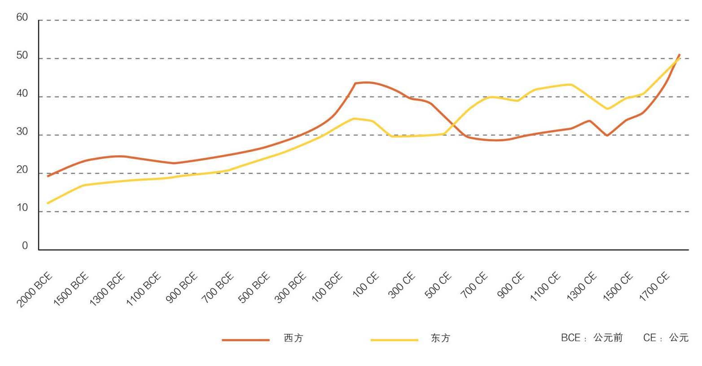

农业文明的发展促使人口出现大幅增长。从公元前10000年左右，人口开始长期上升，人类对土地的开垦利用不断扩张，土地的单位产出也因为农业技术的不断改进而提高。公元前5000年左右，集中的水利灌溉技术最先出现于中东的美索不达米亚平原，此后一系列深耕技术在东西方都开始被使用，比如轮种、选种、育种、休耕、农具的改革、牲畜的使用等，同时也出现了铁制农具、水车、风车等农业工具。为了更好地利用这些新的技术，人类开始提高自身组织能力，建立了城市、国家或更庞大的帝国，城邦、国家间出现了人口流动、掠夺和战争。人畜接触和人口流动导致细菌、瘟疫的传播，引发新的战争。与此同时，人口流动和新的地理发现也促进了贸易和社会分工，大的帝国得以建立稳定统一的市场，先进的技术得以在大范围内更快传播。无论是组织能力、机构设置、还是技术创新，率先发起的地区会得到更多的优势，挑战已有的文明中心，变其地理优势为劣势，进而取代旧的文明中心，成为新的文明中心。整个2.0农业文明一直在前进两步，后退一步的态势下前进、发展。

直到工业革命到来之前，农业文明社会的发展轨迹始终遵循着“上升、冲顶、衰落”的循环规律，社会每经过一段时间的发展就会达到一个峰值，同时触及难以逾越的天花板，之后不可避免地衰落，后退，再上升，触顶，衰落，如此循环往复。
究其根本，农业文明的社会发展存在天花板，因为农业文明有一个天生不足的瓶颈。农作物产生于光合作用，牲畜也要消耗植物，动物产出的热量和消耗的植物能量比例是10：1，所以最终光合作用能够产生的能量上限受制于土地面积和土地的单位产出，在这两者都有上限的情况下，自然资源也就有了上限。而人类在这个时期还不能够控制人口，人使用新能量一个重要的方式就是生育更多的子嗣，所以有限的资源和近乎无限的人口增长决定了人口增长最终只能通过非自然灾难来消化和制约。自公元前约10000年起，这个基本的瓶颈是整个农业社会一直无法解决的问题。纵观整个2.0文明的历史，尤其是近代几千年，做饼与分饼的矛盾不仅一直存在，而且有愈演愈烈之势。
总体来说，人类在农业文明时代面临的灾难主要由这五个原因导致：饥荒、人口流动引起的战争、瘟疫、气候变化、政权失败。土地收成受制于天气，气候变化无论大小都会直接影响农作物的产出。小的变化导致收成减产，造成局部性的饥荒；长期大的变动则会让一些地区的土地收成系统性减缓，必然会引起大规模的人口迁徙，进而引起政权争夺和战争。游牧民族因为蓄养的动物需要消耗大量植物，更受制于天气的变化，加之本身的流动性也强，所以更倾向于掠夺和战争。在几千年的时间里，游牧民族和农业人口对土地的争夺一直是战争的主要原因，而农业人口之间的流动也是人口流动的一个主要源泉。游牧民族的迁移给农业人口带来的另外一个直接结果就是细菌和病毒的传播，和以此引起的严重瘟疫，这是历史上人口消减的最重要的原因。
为了应对这些挑战，在东西方两个文明中心的人类，都开始加强了组织能力，于是出现了城市、国家、帝国。这些社会组织的创新一方面在于创造了和平的环境，促进国土范围之内技术的传播和贸易的扩展，形成共同市场，促进了社会的发展。另一方面，先进政权和落后地区的差异也成为战争、资源掠夺和征服的一个主要原因。气候的变化常常使一些地区的优势显示出来，使得文明的中心发生转移，但是同时新的文明中心的发展又带来了新一轮的挑战，新一轮挑战使文明中心再次迁移。地理的优势和劣势不断转移，整个社会以前进两步、后退一步的态势往前推进。
从历史的轨迹上看，公元前1300年左右，西方的社会发展一度达到了一个区间顶峰，社会发展指数比农业文明开始时增长了6倍左右，东方也增长了4倍左右。但是这时在西方的文明中心出现了第一次全区域性的毁灭——当五大灾难中的数项同时出现的时候，毁灭几乎是必然。
这一次的失败让西方的发展程度在此后的200年里退回到600年以前的水平，而东方在这一段时间里还在持续发展，这是东方和西方两大文明中心第一次开始拉近了距离，并在此后的发展中表现出惊人的一致。
这一时期欧亚大陆的两大文明中心都开始受到来自北方游牧民族的侵略。此时的北方游牧民族活跃在大草原高速公路——东起中国的东北、蒙古，西至匈牙利的一条长长的欧亚大陆线上，在长达几千年的时间里，他们一直是东西方农业文明最主要的共同敌人。农业文明国家和游牧民族的争夺战争从来没有停止过，但欧亚大陆也因为活跃在大草原高速公路上的游牧民族而被连接在一起。
虽然农业文明面临挑战，但在几千年里至少有三次冲顶，在应对挑战中不断创新。农业文明阶段在制度上的创新首先包括从低级管理国家向高级管理国家进化的过程，主要在公元前1000年到公元前200年左右完成。西方从低端国家过渡到以大流士的叙利亚到色雷斯的波斯帝国为代表的高端政权，再经过希腊的城邦，开始在罗马帝国真正成为集大成者，建立了代表西方最高水平的政权。罗马帝国也因为地处地中海内陆，拥有一个非常方便的内海交通通道，因此在帝国范围之内，形成了一个跨欧亚大陆的巨大的贸易帝国，资源得以最优分配，社会发展第一次达到了农业文明的顶峰。从公元前200年左右到公元纪年，罗马帝国开始进入到顶峰时期。这时距离农业文明的开始，社会发展指数增加了10倍左右。与此同时，东方经过夏、商、周这些低端国家，以及春秋战国对高端政府的过渡尝试，以秦、汉为开启出现了中央集权这一高端管理政权，也建立起一个跨区域的大的帝国。虽然社会发展指数此时略低于罗马，但是当时在东方也处于领先地位。
在农业文明第一次冲顶之后，五大挑战几乎同时出现在东西方，尤其是游牧民族的入侵，加上自身政权的失败，瘟疫流行，使得东西方两大帝国在第一次冲顶之后先后失败，从而引发了整个文明区域的毁灭性倒退。这次倒退在西方持续了上千年，在东方持续了差不多400年。400年之后，东方出现了以唐、宋为代表的黄金时代，宋朝的东方帝国第二次冲到了农业文明的顶峰，达到甚至超过了罗马帝国所取得的成就。但是这一次冲顶之后，农业文明再次被游牧民族（蒙古铁骑）击败，游牧民族政权加上瘟疫流行让宋朝的冲顶又遭失败。蒙古大军横扫整个欧亚大陆，征服了从中国一直到匈牙利、俄国、中东等几乎所有文明中心的国家，也把瘟疫带到了世界的每一个角落。这一次的征服虽然摧垮了宋朝的成就，但是它也把宋朝所代表的高度发展的东方文明传播到了当时相对落后的西欧。当时的宋朝一度达到了文明的顶峰，那时铸铁产量每年大概十几万吨。而直到1700年，整个欧洲的总产量也才达到这个数字。中国当时最重要的技术发明，比如铸铁、火药、指南针、纺车、风车、水车、农业技术等都传到了欧洲。
蒙古大征服的另外一个后果则得益于它所没有做到的事情。蒙古的铁骑到了匈牙利以后就戛然而止，完全没有到达西欧，所以其破坏没有波及西欧，但是技术却传到了西欧，这为西欧成为下一次文明的爆发点提供了一个绝好的条件。当时处在封建征战里的欧洲，在罗马帝国以后，几次试图统一的努力都失败了。欧洲的政权在几百个大大小小的封建王国之间，在基督教皇和王国之间进行了上千年无穷无尽的战争，所以中国的火器到来以后，迅速被发展成火枪和火炮。火枪、火炮反过头来又传回到了东方。几百年以后，在火枪和火炮的帮助下，东西两方在俄国和清朝共同努力之下，将肆虐在农业人口领地上几千年的游牧人口彻底制服。到了17世纪左右，大草原高速公路以1689年中俄之间的《尼布楚条约》为界，彻底被封锁。大草原公路的绝大部分分到了俄国，相当一部分分到中国，中国的国土也从原来的黄河长江流域，扩展到了东北、蒙古、新疆、西藏，从此开拓出一个新的土地边疆，也为中国重新开始社会发展提供了土地资源——尽管这些新开拓的土地和长江黄河流域土地的产出是不可比拟的。
与此同时在西方，从15世纪以后，被蒙古遗漏的西欧开始呈现出朝气蓬勃的新活力，在威尼斯、佛罗伦萨出现了文艺复兴。整个西欧因为中国技术的引进，开始出现了新一轮的社会发展。新的中国技术的引入，再加上马可·波罗对中国的盛赞，引起了西方第一次真正的中国热，导致西方开始寻求东方的财富，为下一次的大航海运动提供了根本性的动力。所以西欧从1500年开始，社会逐渐向上发展，到了17、18世纪，无论东方、西方都再次冲向农业文明所能达到的极限。但是这次，东西两方在冲顶过程中所遇到的挑战和获得的机遇截然不同，从而，东西两方在接下来几百年的命运也截然不同，这也给人类命运指出一条完全崭新的道路。